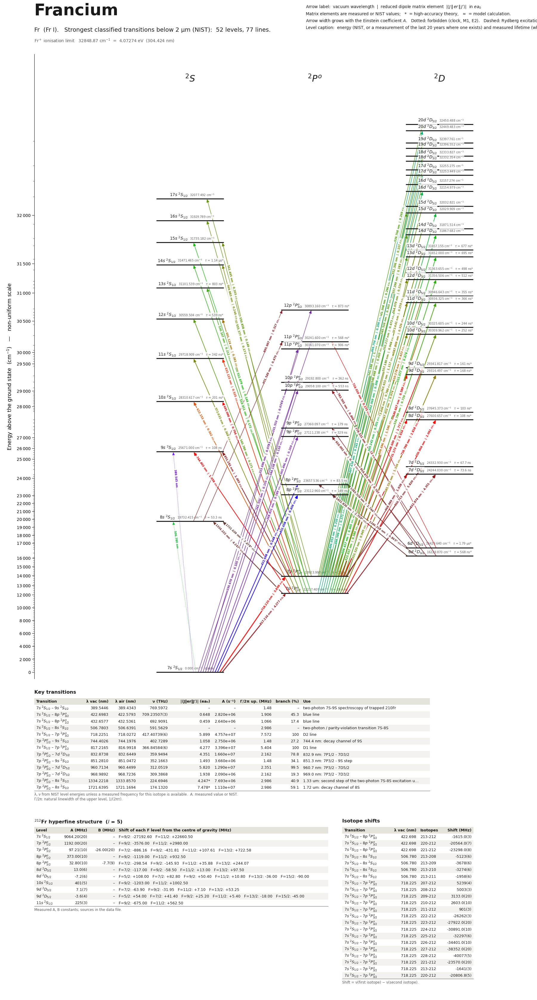

Francium energy level diagram
Energy levels and transitions of neutral francium (Fr I): the 77 strongest classified lines below 2 µm from the NIST Atomic Spectra Database and the 52 levels they connect, each line with its vacuum wavelength, frequency and, for 75 of them, the reduced dipole matrix element derived from the NIST transition rate. Measured lifetimes, transition rates, hyperfine constants and isotope shifts from the literature are included, each with its citation.
Hover a line or a level to isolate it, click to keep it selected. Scroll to zoom, drag to move.

Download: diagram (PDF) diagram (SVG) transitions (CSV) levels (CSV) source code

Key transitions of francium
| Transition | λ vac (nm) | λ air (nm) | ν (THz) | |⟨J‖er‖J′⟩| (ea₀) | A (s⁻¹) | Γ/2π up. (MHz) | branch (%) | Use |
|---|---|---|---|---|---|---|---|---|
| 7s 2S1/2 – 9s 2S1/2 | 389.5446 | 389.4343 | 769.5972 | – | – | 1.48 | – | two-photon 7S-9S spectroscopy of trapped 210Fr |
| 7s 2S1/2 – 8p 2P°3/2 | 422.6983 | 422.5793 | 709.23507(3) | 0.648 | 2.820e+06 | 1.906 | 45.3 | blue line |
| 7s 2S1/2 – 8p 2P°1/2 | 432.6577 | 432.5361 | 692.9091 | 0.459 | 2.640e+06 | 1.066 | 17.4 | blue line |
| 7s 2S1/2 – 8s 2S1/2 | 506.7803 | 506.6391 | 591.5629 | – | – | 2.986 | – | two-photon / parity-violation transition 7S-8S |
| 7s 2S1/2 – 7p 2P°3/2 | 718.2251 | 718.0272 | 417.40739(6) | 5.899 | 4.757e+07 | 7.572 | 100 | D2 line |
| 7p 2P°1/2 – 9s 2S1/2 | 744.4026 | 744.1976 | 402.7289 | 1.058 | 2.750e+06 | 1.48 | 27.2 | 744.4 nm: decay channel of 9S |
| 7s 2S1/2 – 7p 2P°1/2 | 817.2165 | 816.9918 | 366.84584(6) | 4.277 | 3.396e+07 | 5.404 | 100 | D1 line |
| 7p 2P°1/2 – 7d 2D3/2 | 832.8738 | 832.6449 | 359.9494 | 4.351 | 1.660e+07 | 2.162 | 78.8 | 832.9 nm: 7P1/2 - 7D3/2 |
| 7p 2P°3/2 – 9s 2S1/2 | 851.2810 | 851.0472 | 352.1663 | 1.493 | 3.660e+06 | 1.48 | 34.1 | 851.3 nm: 7P3/2 - 9S step |
| 7p 2P°3/2 – 7d 2D5/2 | 960.7134 | 960.4499 | 312.0519 | 5.820 | 1.290e+07 | 2.351 | 99.5 | 960.7 nm: 7P3/2 - 7D5/2 |
| 7p 2P°3/2 – 7d 2D3/2 | 968.9892 | 968.7236 | 309.3868 | 1.938 | 2.090e+06 | 2.162 | 19.3 | 969.0 nm: 7P3/2 - 7D3/2 |
| 7p 2P°1/2 – 8s 2S1/2 | 1334.2218 | 1333.8570 | 224.6946 | 4.247* | 7.693e+06 | 2.986 | 40.9 | 1.33 um: second step of the two-photon 7S-8S excitation u… |
| 7p 2P°3/2 – 8s 2S1/2 | 1721.6395 | 1721.1694 | 174.1320 | 7.478* | 1.110e+07 | 2.986 | 59.1 | 1.72 um: decay channel of 8S |
λ, ν from NIST level energies unless a measured frequency for this isotope is available. A: measured value or NIST. Γ/2π: natural linewidth of the upper level, 1/(2πτ).
212Fr hyperfine structure (I = 5)
| Level | A (MHz) | B (MHz) | Shift of each F level from the centre of gravity (MHz) |
|---|---|---|---|
| 7s 2S1/2 | 9064.20(20) | – | F=9/2: -27192.60 F=11/2: +22660.50 |
| 7p 2P°1/2 | 1192.00(20) | – | F=9/2: -3576.00 F=11/2: +2980.00 |
| 7p 2P°3/2 | 97.21(10) | -26.00(20) | F=7/2: -886.16 F=9/2: -431.81 F=11/2: +107.61 F=13/2: +722.58 |
| 8p 2P°1/2 | 373.00(10) | – | F=9/2: -1119.00 F=11/2: +932.50 |
| 8p 2P°3/2 | 32.80(10) | -7.7(9) | F=7/2: -298.54 F=9/2: -145.93 F=11/2: +35.88 F=13/2: +244.07 |
| 8d 2D3/2 | 13.0(6) | – | F=7/2: -117.00 F=9/2: -58.50 F=11/2: +13.00 F=13/2: +97.50 |
| 8d 2D5/2 | -7.2(6) | – | F=5/2: +108.00 F=7/2: +82.80 F=9/2: +50.40 F=11/2: +10.80 F=13/2: -36.00 F=15/2: -90.00 |
| 10s 2S1/2 | 401(5) | – | F=9/2: -1203.00 F=11/2: +1002.50 |
| 9d 2D3/2 | 7.1(7) | – | F=7/2: -63.90 F=9/2: -31.95 F=11/2: +7.10 F=13/2: +53.25 |
| 9d 2D5/2 | -3.6(4) | – | F=5/2: +54.00 F=7/2: +41.40 F=9/2: +25.20 F=11/2: +5.40 F=13/2: -18.00 F=15/2: -45.00 |
| 11s 2S1/2 | 225(3) | – | F=9/2: -675.00 F=11/2: +562.50 |
Measured A, B constants; sources in the data file.
Isotope shifts
| Transition | λ vac (nm) | Isotopes | Shift (MHz) |
|---|---|---|---|
| 7s 2S1/2 – 8p 2P°3/2 | 422.698 | 213-212 | -1615.0(3) |
| 7s 2S1/2 – 8p 2P°3/2 | 422.698 | 220-212 | -20564.0(7) |
| 7s 2S1/2 – 8p 2P°3/2 | 422.698 | 221-212 | -23298.0(8) |
| 7s 2S1/2 – 8s 2S1/2 | 506.780 | 213-208 | -5123(6) |
| 7s 2S1/2 – 8s 2S1/2 | 506.780 | 213-209 | -3678(6) |
| 7s 2S1/2 – 8s 2S1/2 | 506.780 | 213-210 | -3274(6) |
| 7s 2S1/2 – 8s 2S1/2 | 506.780 | 213-211 | -1958(6) |
| 7s 2S1/2 – 7p 2P°3/2 | 718.225 | 207-212 | 5239(4) |
| 7s 2S1/2 – 7p 2P°3/2 | 718.225 | 208-212 | 5003(3) |
| 7s 2S1/2 – 7p 2P°3/2 | 718.225 | 209-212 | 3133.0(20) |
| 7s 2S1/2 – 7p 2P°3/2 | 718.225 | 210-212 | 2603.0(10) |
| 7s 2S1/2 – 7p 2P°3/2 | 718.225 | 211-212 | 901(3) |
| 7s 2S1/2 – 7p 2P°3/2 | 718.225 | 222-212 | -26262(3) |
| 7s 2S1/2 – 7p 2P°3/2 | 718.225 | 223-212 | -27922.0(20) |
| 7s 2S1/2 – 7p 2P°3/2 | 718.225 | 224-212 | -30891.0(10) |
| 7s 2S1/2 – 7p 2P°3/2 | 718.225 | 225-212 | -32297(6) |
| 7s 2S1/2 – 7p 2P°3/2 | 718.225 | 226-212 | -34401.0(10) |
| 7s 2S1/2 – 7p 2P°3/2 | 718.225 | 227-212 | -38352.0(20) |
| 7s 2S1/2 – 7p 2P°3/2 | 718.225 | 228-212 | -40077(5) |
| 7s 2S1/2 – 7p 2P°3/2 | 718.225 | 221-212 | -23570.0(20) |
| 7s 2S1/2 – 7p 2P°3/2 | 718.225 | 213-212 | -1641(3) |
| 7s 2S1/2 – 7p 2P°3/2 | 718.225 | 220-212 | -20806.8(5) |
Shift = ν(first isotope) − ν(second isotope).
Listed Fr transitions below 2 µm
| Lower level | Upper level | λ vacuum (nm) | λ air (nm) | ν (THz) | Type | |⟨J‖er‖J′⟩| (ea₀) | A (s⁻¹) | Branching (%) | Source of matrix element / A |
|---|---|---|---|---|---|---|---|---|---|
| 7s 2S1/2 | 12p 2P°3/2 | 323.6962 | 323.6028 | 926.1536 | E1 | 0.0783 NIST | 9.160e+04 NIST | 27.6 | NIST ASD (accuracy n/a) |
| 7s 2S1/2 | 11p 2P°3/2 | 330.6703 | 330.5752 | 906.6204 | E1 | 0.105 NIST | 1.560e+05 NIST | 29.1 | NIST ASD (accuracy n/a) |
| 7s 2S1/2 | 11p 2P°1/2 | 331.5532 | 331.4578 | 904.2061 | E1 | 0.0749 NIST | 1.560e+05 NIST | 2.96 | NIST ASD (accuracy n/a) |
| 7s 2S1/2 | 10p 2P°3/2 | 342.5502 | 342.4520 | 875.1781 | E1 | 0.155 NIST | 3.040e+05 NIST | 31.5 | NIST ASD (accuracy n/a) |
| 7s 2S1/2 | 10p 2P°1/2 | 344.1381 | 344.0395 | 871.1399 | E1 | 0.110 NIST | 3.020e+05 NIST | 4.32 | NIST ASD (accuracy n/a) |
| 7s 2S1/2 | 9p 2P°3/2 | 365.4958 | 365.3917 | 820.2351 | E1 | 0.269 NIST | 7.520e+05 NIST | 35.8 | NIST ASD (accuracy n/a) |
| 7s 2S1/2 | 9p 2P°1/2 | 368.8507 | 368.7458 | 812.7745 | E1 | 0.189 NIST | 7.240e+05 NIST | 7.54 | NIST ASD (accuracy n/a) |
| 7s 2S1/2 | 9s 2S1/2 | 389.5446 | 389.4343 | 769.5972 | M1 | – | – | – | – |
| 7s 2S1/2 | 8p 2P°3/2 | 422.6983 | 422.5793 | 709.2351 | E1 | 0.648 NIST | 2.820e+06 NIST | 45.3 | NIST ASD (accuracy n/a) |
| 7s 2S1/2 | 8p 2P°1/2 | 432.6577 | 432.5361 | 692.9091 | E1 | 0.459 NIST | 2.640e+06 NIST | 17.4 | NIST ASD (accuracy n/a) |
| 7p 2P°1/2 | 20d 2D3/2 | 494.7538 | 494.6157 | 605.9427 | E1 | 0.200 NIST | 1.670e+05 NIST | – | NIST ASD (accuracy n/a) |
| 7p 2P°1/2 | 19d 2D3/2 | 496.0528 | 495.9144 | 604.3559 | E1 | 0.220 NIST | 2.000e+05 NIST | – | NIST ASD (accuracy n/a) |
| 7p 2P°1/2 | 18d 2D3/2 | 497.6376 | 497.4988 | 602.4313 | E1 | 0.241 NIST | 2.390e+05 NIST | – | NIST ASD (accuracy n/a) |
| 7p 2P°1/2 | 17d 2D3/2 | 499.5993 | 499.4600 | 600.0658 | E1 | 0.271 NIST | 2.980e+05 NIST | – | NIST ASD (accuracy n/a) |
| 7p 2P°1/2 | 16d 2D3/2 | 502.0693 | 501.9293 | 597.1137 | E1 | 0.308 NIST | 3.810e+05 NIST | – | NIST ASD (accuracy n/a) |
| 7p 2P°1/2 | 15d 2D3/2 | 505.2419 | 505.1010 | 593.3642 | E1 | 0.351 NIST | 4.840e+05 NIST | – | NIST ASD (accuracy n/a) |
| 7s 2S1/2 | 8s 2S1/2 | 506.7803 | 506.6391 | 591.5629 | M1 | – | – | – | – |
| 7p 2P°1/2 | 14d 2D3/2 | 509.4173 | 509.2753 | 588.5008 | E1 | 0.405 NIST | 6.280e+05 NIST | – | NIST ASD (accuracy n/a) |
| 7p 2P°1/2 | 15s 2S1/2 | 512.8791 | 512.7362 | 584.5285 | E1 | 0.144 NIST | 1.560e+05 NIST | – | NIST ASD (accuracy n/a) |
| 7p 2P°1/2 | 13d 2D3/2 | 515.0765 | 514.9331 | 582.0348 | E1 | 0.478 NIST | 8.480e+05 NIST | 49.8 | NIST ASD (accuracy n/a) |
| 7p 2P°1/2 | 14s 2S1/2 | 519.9111 | 519.7664 | 576.6225 | E1 | 0.172 NIST | 2.140e+05 NIST | 22.9 | NIST ASD (accuracy n/a) |
| 7p 2P°1/2 | 12d 2D3/2 | 523.0373 | 522.8917 | 573.1761 | E1 | 0.580 NIST | 1.190e+06 NIST | 50.9 | NIST ASD (accuracy n/a) |
| 7p 2P°1/2 | 13s 2S1/2 | 530.1066 | 529.9591 | 565.5324 | E1 | 0.212 NIST | 3.050e+05 NIST | 23 | NIST ASD (accuracy n/a) |
| 7p 2P°1/2 | 11d 2D3/2 | 534.7904 | 534.6416 | 560.5794 | E1 | 0.729 NIST | 1.760e+06 NIST | 52.5 | NIST ASD (accuracy n/a) |
| 7p 2P°3/2 | 20d 2D5/2 | 539.7677 | 539.6176 | 555.4102 | E1 | 0.269 NIST | 1.550e+05 NIST | – | NIST ASD (accuracy n/a) |
| 7p 2P°3/2 | 19d 2D5/2 | 541.3082 | 541.1578 | 553.8295 | E1 | 0.296 NIST | 1.860e+05 NIST | – | NIST ASD (accuracy n/a) |
| 7p 2P°3/2 | 18d 2D5/2 | 543.1881 | 543.0371 | 551.9128 | E1 | 0.562 NIST | 6.660e+05 NIST | – | NIST ASD (accuracy n/a) |
| 7p 2P°3/2 | 17d 2D5/2 | 545.5157 | 545.3642 | 549.5579 | E1 | 0.365 NIST | 2.770e+05 NIST | – | NIST ASD (accuracy n/a) |
| 7p 2P°1/2 | 12s 2S1/2 | 545.7891 | 545.6375 | 549.2826 | E1 | 0.271 NIST | 4.560e+05 NIST | 23.2 | NIST ASD (accuracy n/a) |
| 7p 2P°3/2 | 16d 2D5/2 | 548.4478 | 548.2954 | 546.6199 | E1 | 0.410 NIST | 3.450e+05 NIST | – | NIST ASD (accuracy n/a) |
| 7p 2P°3/2 | 17s 2S1/2 | 550.8581 | 550.7051 | 544.2281 | E1 | 0.149 NIST | 1.350e+05 NIST | – | NIST ASD (accuracy n/a) |
| 7p 2P°3/2 | 15d 2D5/2 | 552.2170 | 552.0636 | 542.8889 | E1 | 0.473 NIST | 4.480e+05 NIST | – | NIST ASD (accuracy n/a) |
| 7p 2P°3/2 | 15d 2D3/2 | 552.3058 | 552.1524 | 542.8016 | E1 | 0.157 NIST | 7.370e+04 NIST | – | NIST ASD (accuracy n/a) |
| 7p 2P°1/2 | 10d 2D3/2 | 553.3253 | 553.1716 | 541.8015 | E1 | 0.945 NIST | 2.670e+06 NIST | 54.8 | NIST ASD (accuracy n/a) |
| 7p 2P°3/2 | 16s 2S1/2 | 555.3769 | 555.2227 | 539.8000 | E1 | 0.172 NIST | 1.750e+05 NIST | – | NIST ASD (accuracy n/a) |
| 7p 2P°3/2 | 14d 2D5/2 | 557.1802 | 557.0255 | 538.0530 | E1 | 0.944 NIST | 1.740e+06 NIST | – | NIST ASD (accuracy n/a) |
| 7p 2P°3/2 | 14d 2D3/2 | 557.2992 | 557.1444 | 537.9381 | E1 | 0.183 NIST | 9.770e+04 NIST | – | NIST ASD (accuracy n/a) |
| 7p 2P°3/2 | 15s 2S1/2 | 561.4450 | 561.2892 | 533.9659 | E1 | 0.203 NIST | 2.370e+05 NIST | – | NIST ASD (accuracy n/a) |
| 7p 2P°3/2 | 13d 2D5/2 | 563.9154 | 563.7589 | 531.6267 | E1 | 1.117 NIST | 2.350e+06 NIST | 55.2 | NIST ASD (accuracy n/a) |
| 7p 2P°3/2 | 13d 2D3/2 | 564.0794 | 563.9228 | 531.4721 | E1 | 0.216 NIST | 1.320e+05 NIST | 9.58 | NIST ASD (accuracy n/a) |
| 7p 2P°3/2 | 14s 2S1/2 | 569.8828 | 569.7247 | 526.0598 | E1 | 0.244 NIST | 3.250e+05 NIST | 28.1 | NIST ASD (accuracy n/a) |
| 7p 2P°1/2 | 11s 2S1/2 | 572.0333 | 571.8746 | 524.0822 | E1 | 0.369 NIST | 7.380e+05 NIST | 23.7 | NIST ASD (accuracy n/a) |
| 7p 2P°3/2 | 12d 2D5/2 | 573.4058 | 573.2467 | 522.8278 | E1 | 0.780 NIST | 1.090e+06 NIST | 56.6 | NIST ASD (accuracy n/a) |
| 7p 2P°3/2 | 12d 2D3/2 | 573.6409 | 573.4818 | 522.6134 | E1 | 0.259 NIST | 1.800e+05 NIST | 9.86 | NIST ASD (accuracy n/a) |
| 7p 2P°1/2 | 9d 2D3/2 | 585.5114 | 585.3491 | 512.0182 | E1 | 1.326 NIST | 4.440e+06 NIST | 58.6 | NIST ASD (accuracy n/a) |
| 7p 2P°3/2 | 11d 2D5/2 | 587.4528 | 587.2900 | 510.3261 | E1 | 0.974 NIST | 1.580e+06 NIST | 58.6 | NIST ASD (accuracy n/a) |
| 7p 2P°3/2 | 11d 2D3/2 | 587.8091 | 587.6462 | 510.0167 | E1 | 0.326 NIST | 2.650e+05 NIST | 10.3 | NIST ASD (accuracy n/a) |
| 7p 2P°3/2 | 12s 2S1/2 | 601.1239 | 600.9574 | 498.7199 | E1 | 0.383 NIST | 6.840e+05 NIST | 28.6 | NIST ASD (accuracy n/a) |
| 7p 2P°3/2 | 10d 2D5/2 | 609.6964 | 609.5276 | 491.7078 | E1 | 1.546 NIST | 3.560e+06 NIST | 61.7 | NIST ASD (accuracy n/a) |
| 7p 2P°3/2 | 10d 2D3/2 | 610.2784 | 610.1095 | 491.2388 | E1 | 0.423 NIST | 3.990e+05 NIST | 10.9 | NIST ASD (accuracy n/a) |
| 7p 2P°1/2 | 10s 2S1/2 | 622.1533 | 621.9813 | 481.8626 | E1 | 0.562 NIST | 1.330e+06 NIST | 24.6 | NIST ASD (accuracy n/a) |
| 7p 2P°3/2 | 11s 2S1/2 | 633.1153 | 632.9403 | 473.5195 | E1 | 0.525 NIST | 1.100e+06 NIST | 29.2 | NIST ASD (accuracy n/a) |
| 7p 2P°3/2 | 9d 2D5/2 | 648.6002 | 648.4210 | 462.2146 | E1 | 1.777 NIST | 3.910e+06 NIST | 66.8 | NIST ASD (accuracy n/a) |
| 7p 2P°3/2 | 9d 2D3/2 | 649.6671 | 649.4876 | 461.4555 | E1 | 0.589 NIST | 6.410e+05 NIST | 12 | NIST ASD (accuracy n/a) |
| 7p 2P°1/2 | 8d 2D3/2 | 650.9040 | 650.7242 | 460.5786 | E1 | 2.092 NIST | 8.040e+06 NIST | 65.4 | NIST ASD (accuracy n/a) |
| 7p 2P°3/2 | 10s 2S1/2 | 695.0903 | 694.8987 | 431.3000 | E1 | 0.794 NIST | 1.900e+06 NIST | 30.5 | NIST ASD (accuracy n/a) |
| 7s 2S1/2 | 7p 2P°3/2 | 718.2251 | 718.0272 | 417.4074 | E1 | 5.899 measured | 4.757e+07 measured | 100 | UDel Portal for High-Precision Atomic Data and Computation (Safronova group), Fr I tables… |
| 6d 2D5/2 | 11p 2P°3/2 | 724.0102 | 723.8107 | 414.0721 | E1 | 0.275 NIST | 1.010e+05 NIST | 6.49 | NIST ASD (accuracy n/a) |
| 7p 2P°3/2 | 8d 2D5/2 | 728.7899 | 728.5892 | 411.3565 | E1 | 2.818 NIST | 6.930e+06 NIST | 76.5 | NIST ASD (accuracy n/a) |
| 7p 2P°3/2 | 8d 2D3/2 | 731.1727 | 730.9713 | 410.0159 | E1 | 0.934 NIST | 1.130e+06 NIST | 14 | NIST ASD (accuracy n/a) |
| 7p 2P°1/2 | 9s 2S1/2 | 744.4026 | 744.1976 | 402.7289 | E1 | 1.058 NIST | 2.750e+06 NIST | 27.2 | NIST ASD (accuracy n/a) |
| 6d 2D3/2 | 10p 2P°1/2 | 779.5308 | 779.3163 | 384.5807 | E1 | 0.302 NIST | 1.950e+05 NIST | 19.7 | NIST ASD (accuracy n/a) |
| 6d 2D5/2 | 10p 2P°3/2 | 783.5050 | 783.2895 | 382.6299 | E1 | 0.404 NIST | 1.720e+05 NIST | 7.03 | NIST ASD (accuracy n/a) |
| 7s 2S1/2 | 7p 2P°1/2 | 817.2165 | 816.9918 | 366.8458 | E1 | 4.277 measured | 3.396e+07 measured | 100 | UDel Portal for High-Precision Atomic Data and Computation (Safronova group), Fr I tables… |
| 7p 2P°1/2 | 7d 2D3/2 | 832.8738 | 832.6449 | 359.9494 | E1 | 4.351 NIST | 1.660e+07 NIST | 78.8 | NIST ASD (accuracy n/a) |
| 7p 2P°3/2 | 9s 2S1/2 | 851.2810 | 851.0472 | 352.1663 | E1 | 1.493 NIST | 3.660e+06 NIST | 34.1 | NIST ASD (accuracy n/a) |
| 8s 2S1/2 | 12p 2P°3/2 | 895.9975 | 895.7516 | 334.5907 | E1 | 0.327 NIST | 7.530e+04 NIST | 13.2 | NIST ASD (accuracy n/a) |
| 6d 2D5/2 | 9p 2P°3/2 | 914.8748 | 914.6238 | 327.6869 | E1 | 0.707 NIST | 3.310e+05 NIST | 8.04 | NIST ASD (accuracy n/a) |
| 6d 2D3/2 | 9p 2P°1/2 | 919.0021 | 918.7499 | 326.2152 | E1 | 0.526 NIST | 3.610e+05 NIST | 22.5 | NIST ASD (accuracy n/a) |
| 8s 2S1/2 | 11p 2P°3/2 | 951.5486 | 951.2876 | 315.0574 | E1 | 0.470 NIST | 1.300e+05 NIST | 14.2 | NIST ASD (accuracy n/a) |
| 7p 2P°3/2 | 7d 2D5/2 | 960.7134 | 960.4499 | 312.0519 | E1 | 5.820 NIST | 1.290e+07 NIST | 99.5 | NIST ASD (accuracy n/a) |
| 7p 2P°3/2 | 7d 2D3/2 | 968.9892 | 968.7236 | 309.3868 | E1 | 1.938 NIST | 2.090e+06 NIST | 19.3 | NIST ASD (accuracy n/a) |
| 7p 2P°1/2 | 8s 2S1/2 | 1334.2218 | 1333.8570 | 224.6946 | E1 | 4.247 theory | 7.693e+06 theory | 40.9 | UDel Portal for High-Precision Atomic Data and Computation (Safronova group), Fr I tables… |
| 6d 2D3/2 | 8p 2P°3/2 | 1346.3180 | 1345.9500 | 222.6758 | E1 | 0.865 theory | 1.553e+05 theory | 1.21 | UDel Portal for High-Precision Atomic Data and Computation (Safronova group), Fr I tables… |
| 6d 2D5/2 | 8p 2P°3/2 | 1383.5286 | 1383.1504 | 216.6869 | E1 | 2.744 theory | 1.440e+06 theory | 11.2 | UDel Portal for High-Precision Atomic Data and Computation (Safronova group), Fr I tables… |
| 6d 2D3/2 | 8p 2P°1/2 | 1452.8359 | 1452.4388 | 206.3499 | E1 | 2.709 theory | 2.424e+06 theory | 31.4 | UDel Portal for High-Precision Atomic Data and Computation (Safronova group), Fr I tables… |
| 7p 2P°3/2 | 8s 2S1/2 | 1721.6395 | 1721.1694 | 174.1320 | E1 | 7.478 theory | 1.110e+07 theory | 59.1 | UDel Portal for High-Precision Atomic Data and Computation (Safronova group), Fr I tables… |
Reduced dipole matrix elements follow the convention A = ω³|d|²/(3πε₀ħc³(2J′+1)), with J′ the upper level. Tags show where a number comes from: measured, NIST compilation, high-accuracy theory, or a model calculation.
Fr energy levels
Fr⁺ ionisation limit 32848.87 cm⁻¹ = 4.07274 eV (304.424 nm)
Sources
- Allegrini, Arimondo, Orozco, J. Phys. Chem. Ref. Data 51, 043102 (2022) [arXiv:2209.11423…
- Allegrini, Arimondo, Orozco, J. Phys. Chem. Ref. Data 51, 043102 (2022) [arXiv:2209.11423…
- Allegrini, Arimondo, Orozco, J. Phys. Chem. Ref. Data 51, 043102 (2022) [arXiv:2209.11423…
- Allegrini, Arimondo, Orozco, J. Phys. Chem. Ref. Data 51, 043102 (2022) [arXiv:2209.11423…
- Allegrini, Arimondo, Orozco, J. Phys. Chem. Ref. Data 51, 043102 (2022) [arXiv:2209.11423…
- Allegrini, Arimondo, Orozco, J. Phys. Chem. Ref. Data 51, 043102 (2022) [arXiv:2209.11423…
- Allegrini, Arimondo, Orozco, J. Phys. Chem. Ref. Data 51, 043102 (2022) [arXiv:2209.11423…
- Aubin, Gomez, Orozco, Sprouse (Opt. Lett. 28, 2055 (2003) according to the supplement Tab…
- Aubin, Gomez, Orozco, Sprouse, Phys. Rev. A 70, 042504 (2004), as given in Sansonetti, J.…
- Aubin, Gomez, Orozco, Sprouse, Phys. Rev. A 70, 042504 (2004), as given in the supplement…
- Gomez, Orozco, Perez Galvan, Sprouse, Phys. Rev. A 71, 062504 (2005) [arXiv:physics/04120…
- Grossman, Fliller, Orozco, Pearson, Sprouse, Phys. Rev. A 62, 062502 (2000), as given in …
- Grossman, Fliller, Orozco, Pearson, Sprouse, Phys. Rev. A 62, 062502 (2000), as given in …
- Kalita et al., Phys. Rev. A 97, 042507 (2018) [arXiv:1710.07604], Table II (measured in i…
- Lassegues et al. (CRIS collaboration, ISOLDE), arXiv:2604.12467v2 (2026), "Energies and l…
- Lassegues et al. (CRIS collaboration, ISOLDE), arXiv:2604.12467v2 (2026), "Energies and l…
- Lassegues et al. (CRIS collaboration, ISOLDE), arXiv:2604.12467v2 (2026), "Energies and l…
- Lassegues et al. (CRIS collaboration, ISOLDE), arXiv:2604.12467v2 (2026), "Energies and l…
- Lassegues et al. (CRIS collaboration, ISOLDE), arXiv:2604.12467v2 (2026), "Energies and l…
- Lassegues et al. (CRIS collaboration, ISOLDE), arXiv:2604.12467v2 (2026), "Energies and l…
- Lassegues et al. (CRIS collaboration, ISOLDE), arXiv:2604.12467v2 (2026), "Energies and l…
- Lassegues et al. (CRIS collaboration, ISOLDE), arXiv:2604.12467v2 (2026), "Energies and l…
- Lassegues et al. (CRIS collaboration, ISOLDE), arXiv:2604.12467v2 (2026), "Energies and l…
- Lassegues et al. (CRIS collaboration, ISOLDE), arXiv:2604.12467v2 (2026), "Energies and l…
- NIST ASD
- NIST ASD level energies
- Sansonetti, J. Phys. Chem. Ref. Data 36, 497 (2007) Table 6 (Bauche et al. 1986)
- Sansonetti, J. Phys. Chem. Ref. Data 36, 497 (2007) Table 6 (Duong et al. 1987)
- Simsarian, Orozco, Sprouse, Zhao, Phys. Rev. A 57, 2448 (1998), as given in Sansonetti, J…
- UDel Portal for High-Precision Atomic Data and Computation (Safronova group), Fr I tables…
- UDel Portal for High-Precision Atomic Data and Computation (Safronova group), Fr I tables…
- UDel Portal for High-Precision Atomic Data and Computation (Safronova group), Fr I tables…
- UDel Portal for High-Precision Atomic Data and Computation (Safronova group), Fr I tables…
- UDel Portal for High-Precision Atomic Data and Computation (Safronova group), Fr I tables…
- UDel Portal for High-Precision Atomic Data and Computation (Safronova group), Fr I tables…
- UDel Portal for High-Precision Atomic Data and Computation (Safronova group), Fr I tables…
- UDel Portal for High-Precision Atomic Data and Computation (Safronova group), Fr I tables…
- UDel Portal for High-Precision Atomic Data and Computation (Safronova group), Fr I tables…
- UDel Portal for High-Precision Atomic Data and Computation (Safronova group), Fr I tables…
- UDel Portal for High-Precision Atomic Data and Computation (Safronova group), Fr I tables…
- UDel Portal for High-Precision Atomic Data and Computation (Safronova group), Fr I tables…
- UDel Portal for High-Precision Atomic Data and Computation (Safronova group), Fr I tables…
- UDel Portal for High-Precision Atomic Data and Computation (Safronova group), Fr I tables…
- UDel Portal for High-Precision Atomic Data and Computation (Safronova group), Fr I tables…
- UDel Portal for High-Precision Atomic Data and Computation (Safronova group), Fr I tables…
- UDel Portal for High-Precision Atomic Data and Computation (Safronova group), Fr I tables…
- UDel Portal for High-Precision Atomic Data and Computation (Safronova group), Fr I tables…
- UDel Portal for High-Precision Atomic Data and Computation (Safronova group), Fr I tables…
- UDel Portal for High-Precision Atomic Data and Computation (Safronova group), Fr I tables…
- UDel Portal for High-Precision Atomic Data and Computation (Safronova group), Fr I tables…
- UDel Portal for High-Precision Atomic Data and Computation (Safronova group), Fr I tables…
- UDel Portal for High-Precision Atomic Data and Computation (Safronova group), Fr I tables…
- UDel Portal for High-Precision Atomic Data and Computation (Safronova group), Fr I tables…
- UDel Portal for High-Precision Atomic Data and Computation (Safronova group), Fr I tables…
- UDel Portal for High-Precision Atomic Data and Computation (Safronova group), Fr I tables…
- UDel Portal for High-Precision Atomic Data and Computation (Safronova group), Fr I tables…
- UDel Portal for High-Precision Atomic Data and Computation (Safronova group), Fr I tables…
- UDel Portal for High-Precision Atomic Data and Computation (Safronova group), Fr I tables…
NIST level energies refer to 212Fr (Sansonetti 2007 Table 5); several of them (6d, 8s, 7d, 9s, 9p-12p ...) carry the Biemont et al. 1998 reference and are partly Ritz-formula predictions - see conflicts. Every lifetime, hyperfine constant and frequency carries the isotope it was measured in: Stony Brook MOT work is 210Fr (I=6), ISOLDE work mostly 212Fr (I=5) and 221Fr (I=5/2), TRIUMF 206-213 and 221. measured_energy_cm (extra field on levels) holds level energies above 7S measured in a given isotope (hyperfine centres of gravity as tabulated). rme_J_ea0 is |<J||D||J'>| in e a0 in the symmetric convention of the Safronova papers / UDel portal (A = 2.02613e18 |d|^2 / ((2J'+1) lambda^3[Angstrom])). The UDel portal does carry neutral Fr (element key "Fr1": 512 distinct matrix elements, 383 rates, lifetimes for 7p-14p, 8s-14s, 6d-13d, 7 hyperfine constants; data service https://atom.ece.udel.edu/graphql behind https://www1.udel.edu/atom/); only the 7s-7p matrix elements and 7p lifetimes there are experimental (Simsarian et al. 1998), everything else is all-order theory and is marked "theory". Portal A_s / branching were computed by the portal with NIST energies, so rates into or out of 8s, 9p, 10p inherit the NIST energy errors listed under conflicts (small effect, below 0.2 % in omega^3). Isotope shifts are nu(first) - nu(second). The 7S-8S and 7S-9S entries are two-photon lines added for their measured frequencies; type "M1" marks them as E1-forbidden. Extra fields beyond the sc
Atoms with measured data
- Lithium-632 levels, 85 lines
- Lithium-732 levels, 85 lines
- Beryllium-917 levels, 26 lines
- Sodium-2336 levels, 106 lines
- Magnesium-2418 levels, 61 lines
- Magnesium-2518 levels, 61 lines
- Potassium-3934 levels, 84 lines
- Potassium-4034 levels, 84 lines
- Potassium-4134 levels, 84 lines
- Calcium-4035 levels, 61 lines
- Calcium-4335 levels, 61 lines
- Rubidium-8536 levels, 94 lines
- Rubidium-8736 levels, 94 lines
- Strontium-8740 levels, 70 lines
- Strontium-8840 levels, 70 lines
- Caesium-13331 levels, 79 lines
- Barium-13744 levels, 89 lines
- Barium-13844 levels, 89 lines
- Dysprosium-16339 levels, 55 lines
- Dysprosium-16439 levels, 55 lines
- Ytterbium-17118 levels, 26 lines
- Ytterbium-17418 levels, 26 lines